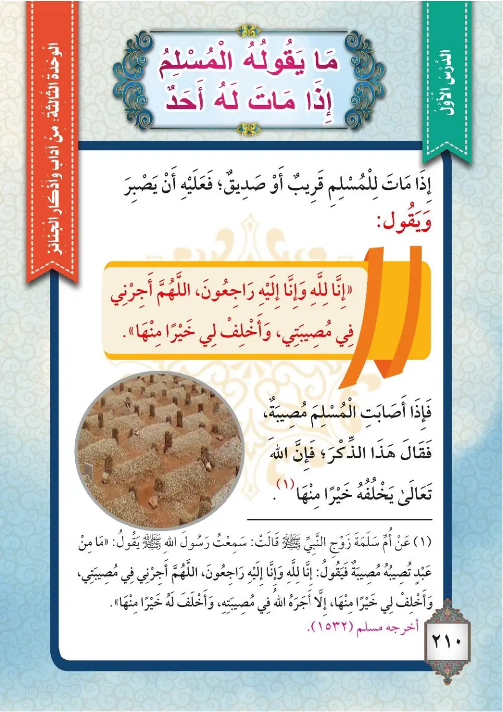
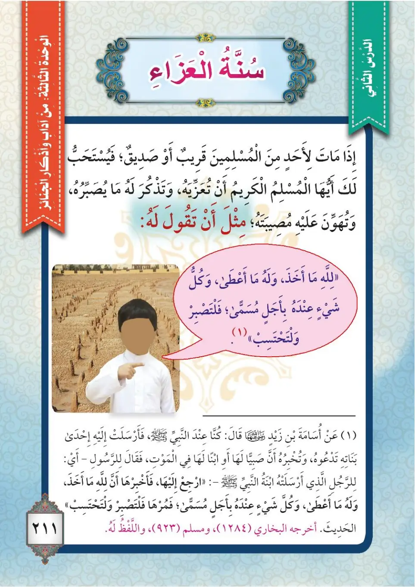
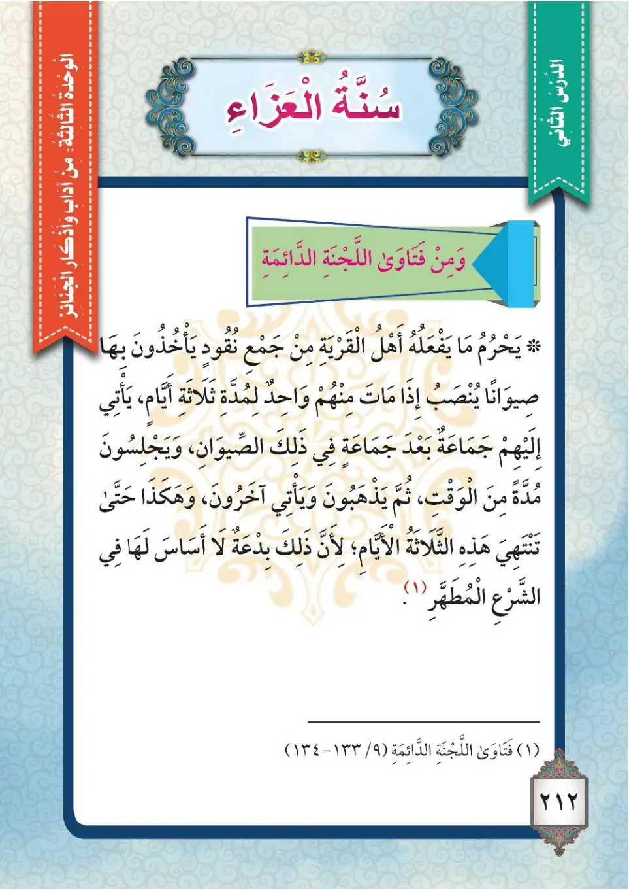

Stage 3·المرحلة الثالثة💬 Unit 1
أَذْكَارُ الْمُصِيبَةِ The Adhkar of Calamity
From the Textbookpp. 211–213



قَالَ تَعَالَى: ﴿وَبَشِّرِ الصَّابِرِينَ، الَّذِينَ إِذَا أَصَابَتْهُمْ مُصِيبَةٌ قَالُوا إِنَّا لِلَّهِ وَإِنَّا إِلَيْهِ رَاجِعُونَ﴾. إِذَا مَاتَ لِلْمُسْلِمِ قَرِيبٌ أَوْ صَدِيقٌ فَعَلَيْهِ أَنْ يَصْبِرَ، وَيَقُولَ الْكَلِمَاتِ الَّتِي عَلَّمَنَا النَّبِيُّ ﷺ إِيَّاهَا؛ وَلِيُعِيدَ اللهُ تَعَالَى عَلَيْهِ بِخَيْرٍ مِنْهَا.
Qala ta'ala: «Wa bashshiri as-sabirina, alladhina idha asabathum musibatun qalu inna lillahi wa inna ilayhi raji'un». Idha matta lil-muslimi qaribun aw sadiqun fa'alayhi an yasbira, wa yaqula al-kalimati allati allamana an-nabiyyu ﷺ iyyaha; wa layu'awwida Allaha ta'ala 'alayhi bi-khayrin minha.
Allah the Exalted said: "And give good tidings to the patient, who, when disaster strikes them, say: 'Indeed we belong to Allah and indeed to Him we will return.'" If a relative or friend of a Muslim dies, he must be patient and say the words that the Prophet ﷺ taught us, so that Allah the Exalted may recompense him with something better.
இறைவன் கூறினான்: "பொறுமை உடையவர்களுக்கு நற்செய்தியை அறிவிப்பீராக! அவர்களுக்குத் துன்பம் ஏற்பட்டபோது 'நிச்சயமாக நாங்கள் அல்லாஹ்வுக்கே சொந்தமானவர்கள்; நிச்சயமாக நாங்கள் அவனிடமே திரும்பிச் செல்வோம்' என்று கூறுவார்கள்." ஒரு முஸ்லிமின் உறவினரோ நண்பரோ இறந்தால் பொறுமையாக நபி ﷺ கற்றுக்கொடுத்த வார்த்தைகளைக் கூற வேண்டும்; அல்லாஹ் அதற்குப் பதிலாக சிறந்ததைக் கொடுப்பான்.
عَنْ أُمِّ سَلَمَةَ رَضِيَ اللهُ عَنْهَا قَالَتْ: سَمِعْتُ رَسُولَ اللهِ ﷺ يَقُولُ: «مَا مِنْ عَبْدٍ تُصِيبُهُ مُصِيبَةٌ فَيَقُولُ: إِنَّا لِلَّهِ وَإِنَّا إِلَيْهِ رَاجِعُونَ، اللَّهُمَّ أْجِرْنِي فِي مُصِيبَتِي وَأَخْلِفْ لِي خَيْرًا مِنْهَا، إِلَّا أَجَرَهُ اللهُ فِي مُصِيبَتِهِ وَأَخْلَفَ لَهُ خَيْرًا مِنْهَا». أَخْرَجَهُ مُسْلِمٌ.
'An Ummi Salamata radiyallahu 'anha qalat: sami'tu rasulallahi ﷺ yaqulu: «Ma min 'abdin tusibuhu musibatun fa-yaqula: Inna lillahi wa inna ilayhi raji'un, Allahumma ajirni fi musibati wa akhlif li khairan minha, illa ajara-hullahu fi musibatihi wa akhlafa lahu khairan minha». Akhrajahu Muslim.
Umm Salamah, may Allah be pleased with her, said: I heard the Messenger of Allah ﷺ say: "No servant is afflicted with a calamity and then says: 'Indeed we belong to Allah and indeed to Him we will return. O Allah, reward me in my affliction and compensate me with something better' — except that Allah rewards him in his affliction and compensates him with something better." Narrated by Muslim.
உம்மு சலமா (ரலி) கூறினார்கள்: "ஒரு துன்பம் ஏற்படும்போது ஓர் அடியான், 'நிச்சயமாக நாங்கள் அல்லாஹ்வுக்கே சொந்தம்; அவனிடமே திரும்புவோம். இறைவா! என் துன்பத்தில் எனக்கு நற்கூலி தருவாயாக; அதைவிட சிறந்ததை எனக்கு மாற்றீடு செய்வாயாக' என்று கூறினால், அல்லாஹ் அவருக்கு துன்பத்தில் நற்கூலி அளித்து சிறந்ததை மாற்றீடு செய்வான்" என்று கூறினதைக் கேட்டேன். (முஸ்லிம்)
عَنْ أُسَامَةَ بْنِ زَيْدٍ رَضِيَ اللهُ عَنْهُ قَالَ: كُنَّا عِنْدَ النَّبِيِّ ﷺ فَأَرْسَلَتْ إِلَيْهِ إِحْدَى بَنَاتِهِ تَدْعُوهُ وَتُخْبِرُهُ أَنَّ صَبِيًّا لَهَا فِي الْمَوْتِ، فَقَالَ: «ارْجِعْ فَأَخْبِرْهَا: إِنَّ لِلَّهِ مَا أَخَذَ، وَلَهُ مَا أَعْطَى، وَكُلُّ شَيْءٍ عِنْدَهُ بِأَجَلٍ مُسَمًّى، فَمُرْهَا فَلْتَصْبِرْ وَلْتَحْتَسِبْ». مُتَّفَقٌ عَلَيْهِ.
'An Usamata ibni Zaydin radiyallahu 'anhu qal: kunna 'inda an-nabiyyi ﷺ fa-arsalat ilayhi ihda banatihi tad'uhu wa tukhbiruhu anna sabiyyan laha fi al-mawt, faqala: «Arji' fa-akhirha: inna lillahi ma akhaza, wa lahu ma a'ta, wa kullu shay'in 'indahu bi-ajalin musamma, fa'murha fal-tasbir wal-tah'tasib». Muttafaqun 'alayh.
Usamah ibn Zayd, may Allah be pleased with him, said: We were with the Prophet ﷺ when one of his daughters sent for him, telling him that her child was dying. He said: "Go back and tell her: 'Indeed, whatever Allah takes and whatever He gives belongs to Him, and everything with Him has an appointed term. So tell her to be patient and seek reward.'" Agreed upon.
உசாமா இப்னு ஜைத் (ரலி) கூறினார்கள்: "நாங்கள் நபி ﷺ அவர்களிடம் இருக்கும்போது அவர்களின் ஒரு மகள், தம் குழந்தை இறக்கும் நிலையில் இருப்பதாக அறிவிக்க அனுப்பினாள். 'திரும்பிச் சென்று, அல்லாஹ் எதை எடுத்தானோ, எதைக் கொடுத்தானோ அது அவனுக்கே சொந்தம்; அவனிடம் உள்ள அனைத்தும் குறிப்பிட்ட தவணையுடையது; பொறுமையாக நற்கூலி தேடட்டும்' என்று கூறுங்கள்" என்றார்கள். (முத்ஃதஃபுன் அலைஹ்)
مَعْنَى الْحَدِيثِ: «إِنَّ لِلَّهِ مَا أَخَذَ»: إِنَّ الْمُلْكَ لِلَّهِ تَعَالَى، وَهُوَ يَتَصَرَّفُ فِي عِبَادِهِ بِالْعَطَاءِ وَالْمَنْعِ. «وَكُلُّ شَيْءٍ عِنْدَهُ بِأَجَلٍ مُسَمًّى»: كُلُّ شَيْءٍ عِنْدَ اللهِ لَهُ وَقْتٌ مُحَدَّدٌ لَا يَتَقَدَّمُ وَلَا يَتَأَخَّرُ.
Ma'na al-hadith: «Inna lillahi ma akhaza»: inna al-mulka lillahi ta'ala, wa huwa yatasarrafu fi 'ibadihi bil-'ata'i wal-man'. «Wa kullu shay'in 'indahu bi-ajalin musamma»: kullu shay'in 'inda Allahi lahu waqtun muhaddadun la yataqaddamu wa la yata'akhkharu.
The meaning of the hadith:
"Indeed, whatever Allah takes": the Kingdom belongs to Allah the Exalted, and He disposes of His servants by giving and withholding.
"And everything with Him has an appointed term": everything with Allah has a fixed time that is neither advanced nor postponed.
ஹதீஸின் பொருள்:
'அல்லாஹ் எதை எடுத்தானோ அது அவனுக்கே சொந்தம்': ஆட்சி அல்லாஹ்வுக்கே சொந்தம்; தம் அடியார்களுக்கு கொடுத்தும், தடுத்தும் அவன் தீர்மானிக்கிறான்.
'அவனிடம் உள்ள அனைத்தும் குறிப்பிட்ட தவணையுடையது': அல்லாஹ்விடம் உள்ள அனைத்திற்கும் நிலையான ஒரு காலம் உண்டு; முன்பும் நடக்காது, பின்பும் நடக்காது.
إِذَا مَاتَ لِلْمُسْلِمِ قَرِيبٌ أَوْ صَدِيقٌ، فَيُسْتَحَبُّ أَنْ يُعَزِّيَ إِخْوَانَهُ الْمُسْلِمِينَ، وَتُذَكِّرَهُ بِمَا يُصَبِّرُهُ وَيُهَوِّنُ عَلَيْهِ مُصِيبَتَهُ، مِثْلَ أَنْ يَقُولَ لَهُ: «إِنَّ لِلَّهِ مَا أَخَذَ، وَلَهُ مَا أَعْطَى، وَكُلُّ شَيْءٍ عِنْدَهُ بِأَجَلٍ مُسَمًّى، فَلْتَصْبِرْ وَلْتَحْتَسِبْ». وَيَنْبَغِي الِابْتِعَادُ عَنِ الْبِدَعِ؛ مِثْلِ الِاجْتِمَاعِ لِلْعَزَاءِ فِي صَيُوَانٍ ثَلَاثَةَ أَيَّامٍ، فَذَلِكَ مِنَ الْبِدَعِ الَّتِي لَا أَصْلَ لَهَا فِي الشَّرْعِ الْمُطَهَّرِ.
Idha matta lil-muslimi qaribun aw sadiqun, fa-yustahabbu an yu'azziya ikhwanahu al-muslimin, wa tudhakkiruhu bima yusabbiruhu wa yuhawwinu 'alayhi musibatahu, mithla an yaqula lahu: «Inna lillahi ma akhaza, wa lahu ma a'ta, wa kullu shay'in 'indahu bi-ajalin musamma, fal-tasbir wal-tah'tasib». Wa yanbaghi al-ibtidadu 'ani al-bida'; mithli al-ijtima'i lil-'aza'i fi siwanin thalathata ayyam, fadhalika mina al-bida'i allati la asla laha fi ash-shar'i al-mutahhar.
If a relative or friend of a Muslim dies, it is recommended that he offer condolences to his Muslim brothers and remind them of what will give them patience and lessen their calamity, such as saying: "Indeed, whatever Allah takes and whatever He gives belongs to Him, and everything with Him has an appointed term, so be patient and seek reward." One should also avoid innovations (bid'ah), such as gathering for condolence in a tent for three days, for that is an innovation that has no basis in the pure Shariah.
ஒரு முஸ்லிமின் உறவினரோ நண்பரோ இறந்தால், தம் முஸ்லிம் சகோதரர்களுக்கு ஆறுதல் கூறி, பொறுமைப்படுத்தக்கூடிய வார்த்தைகளை நினைவூட்டுவது நல்லது; எடுத்துக்காட்டாக: 'அல்லாஹ் எதை எடுத்தானோ அது அவனுக்கே சொந்தம்; அவனிடம் உள்ள அனைத்தும் குறிப்பிட்ட தவணையுடையது; பொறுமையாக நற்கூலி தேடுங்கள்.' மேலும், மூன்று நாட்கள் கூடாரம் போட்டுக் கூட்டாக ஆறுதல் கூறுவது போன்ற இந்தக் காரியத்தில் அடிப்படை இல்லாத புதுமைச் செயல்களைத் தவிர்க்க வேண்டும்.